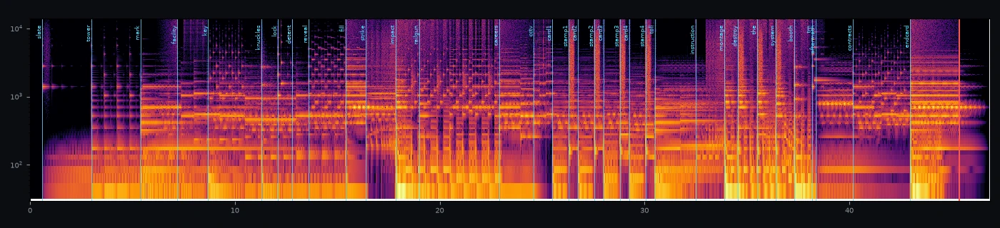
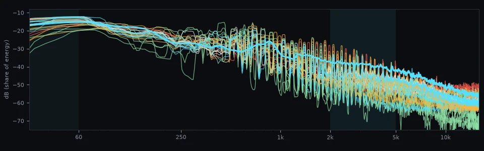

01 Operator theme (title)
v4 is v3 with both builds rewritten ("that build is boring"). Over a C pedal the chords shift Fm, Ab, Bbm, C, Db and hold C7b9. Strings (brass in build 2) climb a semitone every half bar, the choir climbs chord by chord, and filtered FM noise rises underneath: all in steps, never a sweep. The hook's first bar repeats and climbs F, Ab, Bb, C, Db, F (build 2 on to Ab6). Kick and snare double from eighths to sixteenths to 32nds, the chug stutters into 32nd bursts, the arpeggio goes to 32nds, and a low-pass on the whole mix opens across the build. The bass pedal drops out a bar early so the drop brings the low end back. Last bar: a choir shout, nothing, a reversed swell (build 2 saves the shout for beat 4). The drops are v3's, with a second shout on the first downbeat. Jump points: build 0:31, drop 0:46, build 2 1:33, drop 2 1:48. v3 and v2 (the title now) are below it.
00 Intro v3: Moonshot (the full cue, then the sketch)
Jonas picked Launch, "but more of a moonshot vibe: glorious singularity, the progress of man, the next level", with more varied sounds. So the launch film becomes an ascension. A countdown in the dark: a filtered sequencer ticking, flute pipes, the motif on glass, a sub swelling, wind. Ignition: full organ, the choir singing oo to ah, a timpani roll. Liftoff into an open sky: a CS-80 style lead over a seven-saw pad opening, harp and lyre arpeggios, timpani and taiko, the key turning major. Orbit: organ, choir, the motif in the major on bells, the tower bell. The palette is new instruments built in-house for this: additive pipe organ, supersaw pads with filter envelopes, CS-80 style brass with a scoop and late vibrato, plucked strings from decaying harmonics, a vowel-morphing choir and noise wind, alongside the FM timpani and bells. The countdown sits about 13 dB (RMS) under the liftoff. 96 bpm, the same act shape as agreed with Opticals; this sketch runs countdown 3 bars, ignition 1, liftoff 4, orbit 3.
00b Intro v2: music first (Jonas picked Launch)
Jonas: the scored-to-every-cut intro had "no melody and feels jammed into the video". So the order flips: the intro becomes a piece of music with a hook and four- and eight-bar phrases, and the picture is re-cut to it. Only the reveal, the strike, the montage drop and the end sting stay hard-synced, and Foley's stem carries the small sync (clacks, detent, stamps). All three sketches run at 96 bpm, the picture tempo Opticals asked for (a bar is 2.5 s, the montage cuts on eighths). Each is about 20-25 s: the hook, then the drop. Overture tells Mirrorshades' own hook (calm, built, dropped), so the title pays it off. Contract Anthem is a new singable tune grown from the motif. Launch is the epic reading: the motif as a choral theme over war drums, then a half-time drop.
00c Intro score v1: scored to every cut (Jonas: "no melody, jammed into the video")
The intro film is scored to picture: every hit sits on the cut's own timestamp (slate, the mark, the key light, the lock-on, the fill, the strike and its impact, the careers card, four gangers with their freezes and stamps, the Toll, the three words and the booth drop, the ™, the end card), with the pulse, arpeggios and grooves on a 96 bpm grid that lands the ganger cards on every second beat. It is corporate brand-film voice with menace under it, on the contract motif, with Mirrorshades' hook as the operator walks to the lens. The literal sounds (clacks, detent, impact, railgun) are Foley's; the score only accents them. Mastered to -14 LUFS for the Music bus. Plays in the game from assets/intro/intro_score.ogg.

46.87 s: the 45.37 s cut plus a 1.5 s ring past the smash cut. -14.1 LUFS, peak -1.0 dBFS. Sync check: the measured onset of every hit in the rendered file against Opticals' shot table; worst 21 ms (one frame at 30 fps is 33 ms). Swells meet their mark without an attack.
| HIT | TARGET S | ONSET S | ERROR | HOW |
|---|---|---|---|---|
| slate | 0.60 | 0.585 | -15 ms | level |
| tower | 3.00 | 3.005 | +5 ms | level |
| mark | 5.40 | 5.398 | -2 ms | level |
| facility | 7.20 | 7.153 | -47 ms | swell, no transient |
| key | 8.70 | 8.708 | +8 ms | level |
| knuckles | 11.30 | 11.297 | -3 ms | flux |
| lock | 12.10 | 12.102 | +2 ms | flux |
| detent | 12.80 | 12.804 | +4 ms | flux |
| reveal | 13.60 | 13.600 | +0 ms | flux |
| fill | 15.40 | 15.413 | +13 ms | level |
| strike | 16.40 | 16.400 | -0 ms | flux |
| impact | 17.85 | 17.844 | -6 ms | level |
| railgun | 19.00 | 18.995 | -5 ms | level |
| careers | 22.90 | 22.897 | -3 ms | flux |
| cctv | 24.60 | 24.601 | +1 ms | flux |
| card1 | 25.50 | 25.505 | +5 ms | level |
| stamp1 | 26.30 | 26.295 | -5 ms | level |
| card2 | 26.75 | 26.755 | +5 ms | level |
| stamp2 | 27.55 | 27.545 | -5 ms | level |
| card3 | 28.00 | 28.005 | +5 ms | level |
| stamp3 | 28.80 | 28.795 | -5 ms | level |
| card4 | 29.25 | 29.251 | +1 ms | level |
| stamp4 | 30.05 | 30.045 | -5 ms | level |
| toll | 30.50 | 30.502 | +2 ms | level |
| instruction | 32.50 | 32.505 | +5 ms | flux |
| montage | 33.90 | 33.899 | -1 ms | level |
| destroy | 34.57 | 34.591 | +21 ms | level |
| the | 35.50 | 35.500 | +0 ms | level |
| system | 36.40 | 36.399 | -1 ms | level |
| booth | 37.30 | 37.297 | -3 ms | level |
| tm | 38.17 | 38.168 | -2 ms | flux |
| aftermath | 38.37 | 38.396 | +26 ms | swell, no transient |
| contracts | 40.17 | 40.176 | +6 ms | flux |
| endcard | 42.97 | 42.974 | +4 ms | level |
01b Brand film: a head start for the intro score
The intro is being rebuilt picture-first: once Opticals locks the cut, the intro gets a bespoke cue scored to it. These three 35-40 s treatments try the voice ahead of time: a cold corporate pulse, a swelling reveal and a hard stop, all on the contract motif and Mirrorshades' DNA. Each turns on bar lines, so a cut can land on them (hit points are listed in each score). Onboarding is the Anduril/Palantir brand film with a major-key reveal. Quarterly is the OCP ad: sunny corporate pop that turns into Mirrorshades. Asset Reveal is a trailer cue: scan, profile, a stepped climb, one hit, silence, the motif as a logo sting. The meter reads FILM (brand-film voice), SWELL (orchestral reveal) and ICE (the operator's machine).
02 Menu: the server room
Server Room v3: v2 "lost its server room identity", so the machine is the lead again, playing music. The mains hum holds G, two fans a fifth apart are the drone, the relays are the groove (two lines), and a UPS thuds like a heart. The status beeps (short, soft square beeps) play a tuned ostinato that follows Gm, Eb, Cm and D, then a second beep line plays the contract motif as a pager tune of repeated blips. A pad comes up far underneath from bar 5 and never takes over. G minor, 100 bpm, -21 LUFS. v1 and v2 are in section 07. The meter reads STRANDING, EVA and MACHINE.
03 In the game now (music-lab)
The Music autoload plays these: Mirrorshades v4 on the title (the whole club mix, looping), Standby on the briefing card, Server Room v3 on pause (the stage track holds its place and resumes), and a stage playlist of The Toll and Floor 70, shuffled without repeats, changing on a wave clear on the bar line; at the Floor 70 window the stage track sinks under a low-pass and Standby comes up. Big hits duck the music; the stage tracks carry the combat EQ baked in. COMBAT MIX previews that EQ; the pads fire Foley's hit sounds (keys J K L ; U I O P).
04 Mix plan with the SFX

Average spectrum of each sketch (white operator theme, orange title, green menu, red stage) against Foley's combat sounds (thick cyan). Shaded: the sub and the 2-5 kHz band.
| SHARE OF ENERGY | <60 HZ | 2-5 KHZ |
|---|
- The hits own 2-5 kHz and the sub. The sketches keep 1.5-7 % of their energy in 2-5 kHz, the hit sounds about 9 % (table). The busiest there are the Bebop sketches (trumpet); the leanest are Floor 70 among the stages and High Water among the themes. Stage music is written with short stabs and gaps, not held bright chords, in that band.
- In game now: the
Musicbus (its volume is the options slider), trimmed -9 dB by an Amplify stage that also carries the ducking; during play an EQ6 takes -6 dB at 32 Hz and -4 dB at 3.2 kHz;Sfx.DUCKERS(railgun, charged finishers, stomp) duck it 6 dB for 250 ms, finishers, explosions and KOs 3 dB, all fromSfx.played_sound. - Next: stems that follow the fight (base, combo, BREACH) and finisher and wave-clear stings on the beat. The operator sketches are built in blocks (intro, drop, break), so they split into layers the same way.
05 Tool stack
Built so far
- Round 2: the
Musicautoload (scripts/music.gd) and its walk-through test (tools/music_check.tscn, 18 checks); looping game tracks with clean seams (humanised timing is now seeded per note, so the loop replays identically); formant voices (fixed vowel resonances: the FM choir); a 909-style techno kick; operator voices: 8-string chug, detuned Doom bass, saw bass, ICE, clean lead, choir, piano, cello, drone. - Round 1:
tools/music/make_music.py, Jonas's earlier OPNA engine retuned toward the CPS1 (10 FM channels, drive, filters, swing, humanise, sidechain, reverb, glue, LUFS, loops and stems); a synthesised kit with an OKI ADPCM crunch; the horn and arcade voice bank;board.py,balance.py,--check.
Next, and approvals
- Next (no approval needed): the picked operator theme and menu as loops; stems and stings; a live preview loop (
--watch); an in-game audition undertools/shotscombat. - The new direction needs no downloads. Darksynth, the chug and the choir are FM and filtering, which the engine now does.
ymfm(an accurate YM2151) mattered for the SF2 sound and matters less now; Furnace stays optional. Neither is requested.
06 Pick
Downbeat, intro v3: the full Moonshot cue (45 s plus the ring), with Jonas's fixes.
- The organ: it is now a quiet, clean choral organ: one rank per stop, no celeste pairs beating, no upper ranks or mixture. It plays plain triads that follow the harmony, only under the countdown and the ignition.
- The ending: the orbit is a warm CS-style poly pad with the bells singing the motif in the major above it; the tower bell rings the sting.
- The arc (bar, time): countdown 1 (0:00) · ignition 4 (0:07.5) · build 5 (0:10) · reveal and hook 7 (0:15) · strike 8 (0:17.5) · market 11 (0:25) · deployment 13 (0:30) · drop and liftoff 14 (0:32.5) · F major 16 (0:37.5) · orbit 17 (0:40) · sting 18 (0:42.5) · smash cut 19 (0:45).
- Not yet in the game: it replaces the in-game intro score once you say yes. Opticals has the bar map and can re-conform the cut to it now. Foley's SFX stem re-renders from Opticals' new cut.json.
I can't hear these, so your ear decides.
07 Kept for later, or passed
Execution Order stays as the source of v2's drop and a possible boss layer; Black ICE is the credits candidate (its piano gets dirtier later: felt, detune, tape wow, a room). The rest is kept for reference.